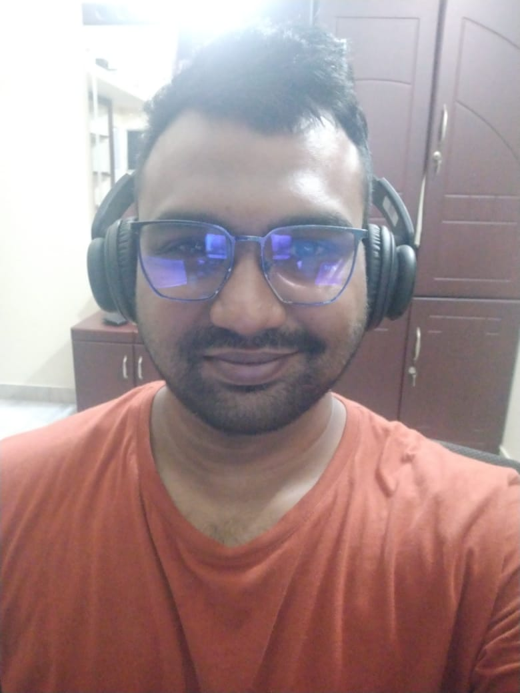

Resume

Summary
Motivated and detail-oriented MERN stack developer with hands-on experience in building scalable, full-stack web
applications. Proficient in MongoDB, Express.js, React.js, and Node.js, with a strong focus on creating
efficient back-end services and interactive front-end user interfaces. Passionate about problem-solving and
delivering user-friendly, high-performance solutions.
Education
Bachelor of Technology (B.Tech) in [Your Field of Study][Your University], [Location] | [Year of Graduation]
Work Experience
- Designed and developed full-stack web applications for various clients using the MERN stack.
- Collaborated with clients to understand requirements and deliver customized solutions.
- Ensured code quality and optimized application performance.
Skills
- Problem-Solving
- Attention to Detail
- Team Collaboration
- Time Management
Certifications and Achievements
- MERN Stack Development Certification - [Certifying Organization]
- JavaScript Advanced Concepts - [Certifying Organization]
- Best Developer Award - [Awarding Organization or Event]